ROJO
STUDIO
What happens when something stops behaving the way it’s supposed to?
A pearl leaves its ring. A cross pendant begins to melt. A straight line breaks its perfect path around a bracelet. Three pieces of jewellery and three small acts of disobedience that build a universe around transformation, loss and the decision to break away from what is expected.
From these pieces, ROJO STUDIO develops its own brand identity and visual language, where jewellery meets surreal imagery, editorial codes and an art direction built around red, silver and a sense of strangeness.
The project was developed as a creative exploration of how generative AI can be integrated into a branding and art direction process, using it as a production tool without replacing the idea, the judgement or the creative direction.
LA FUGA DE LA PERLA
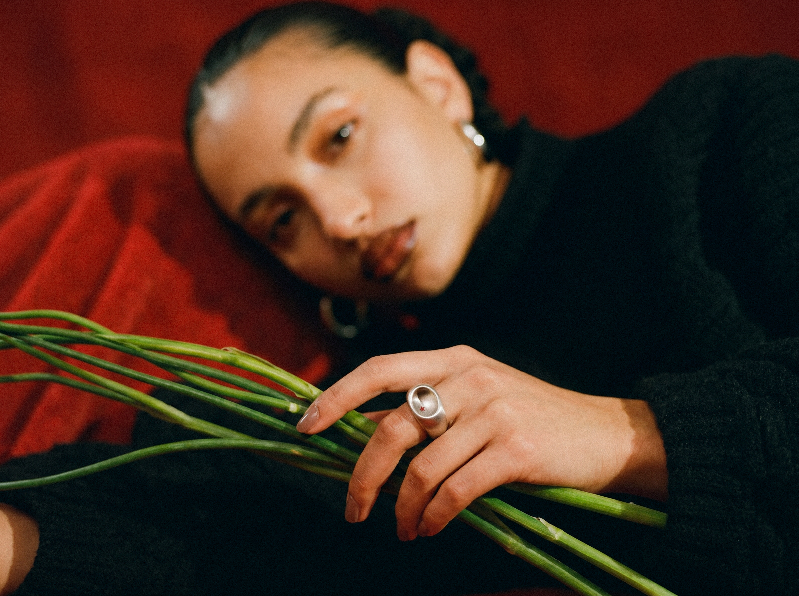
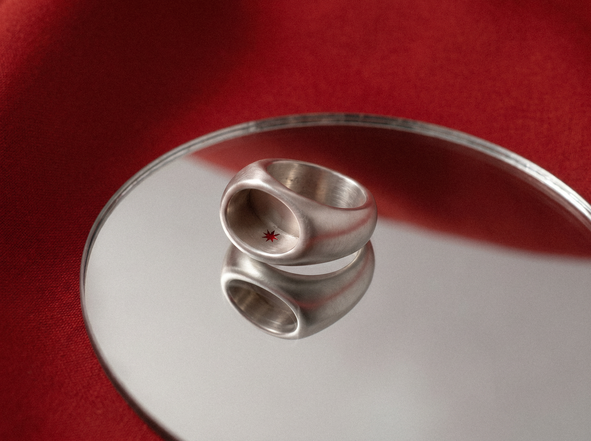
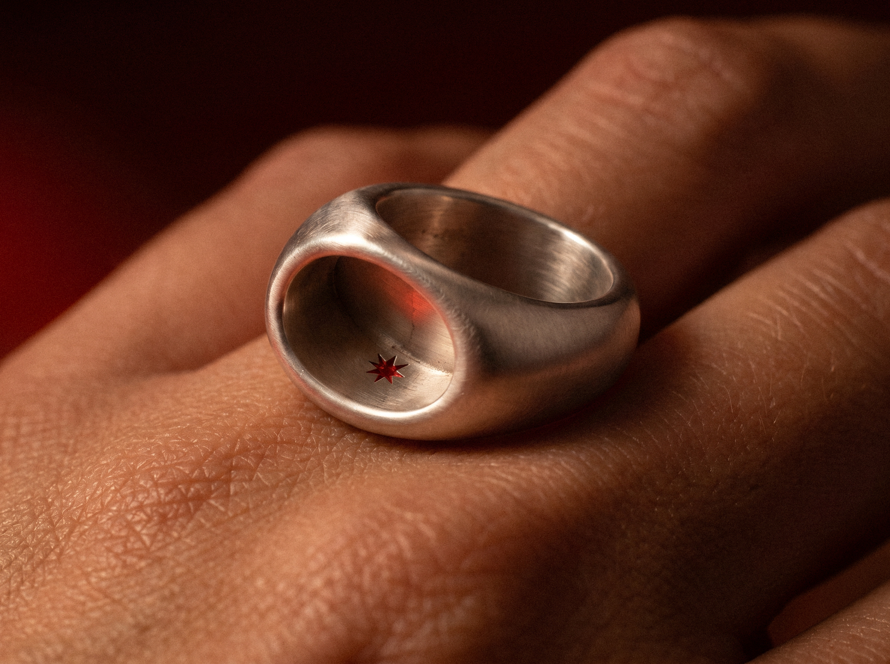
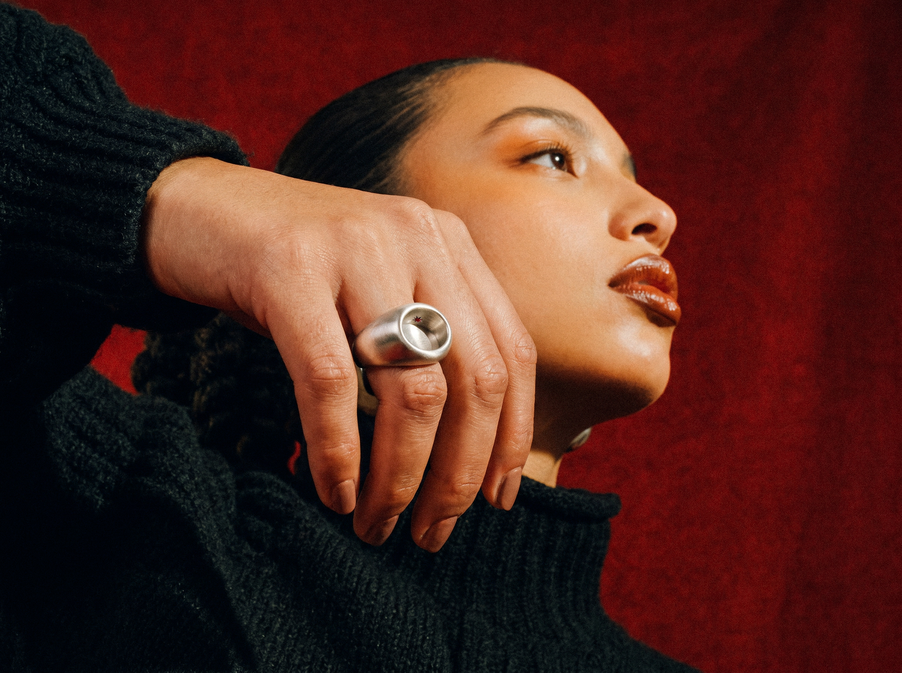
UNA DEVOCIÓN DERRETIDA
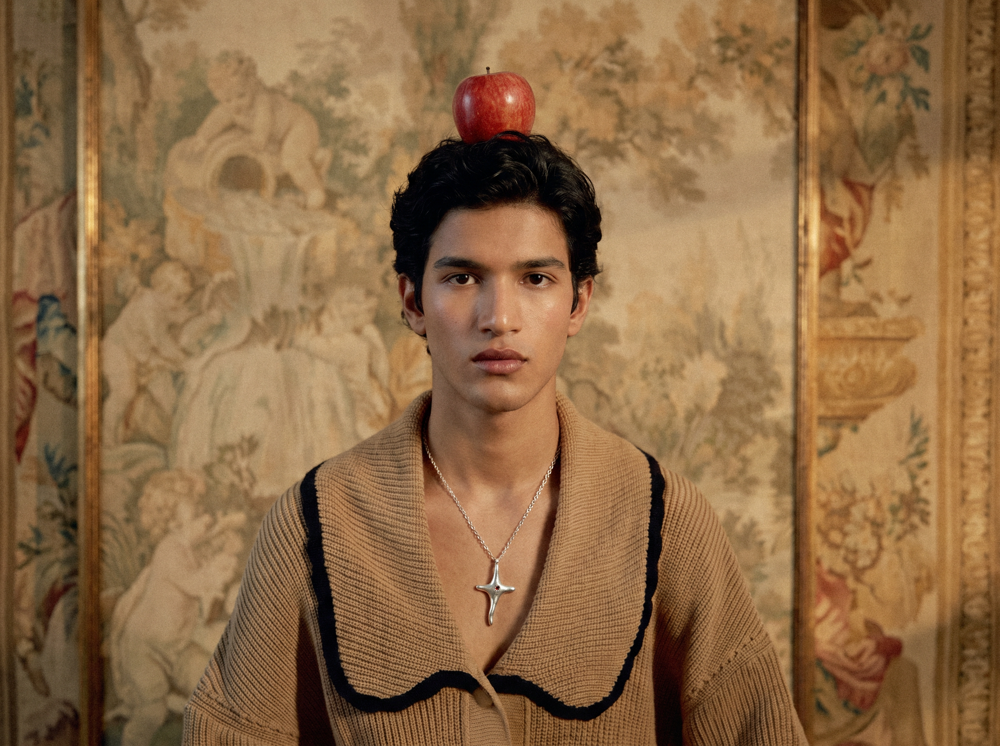
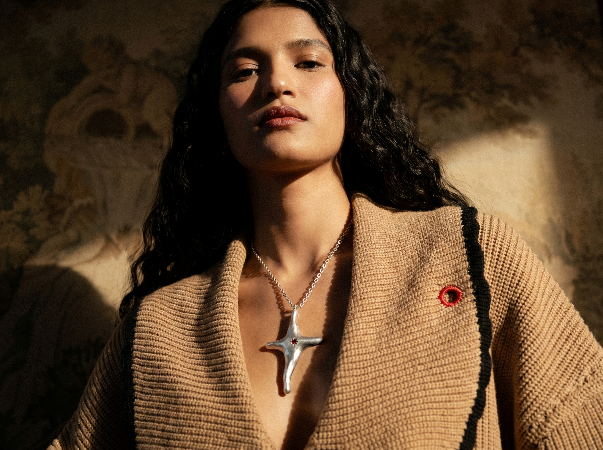
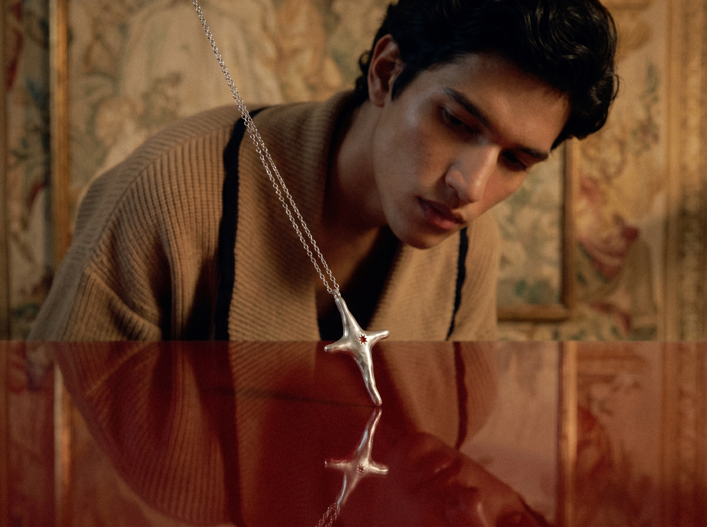
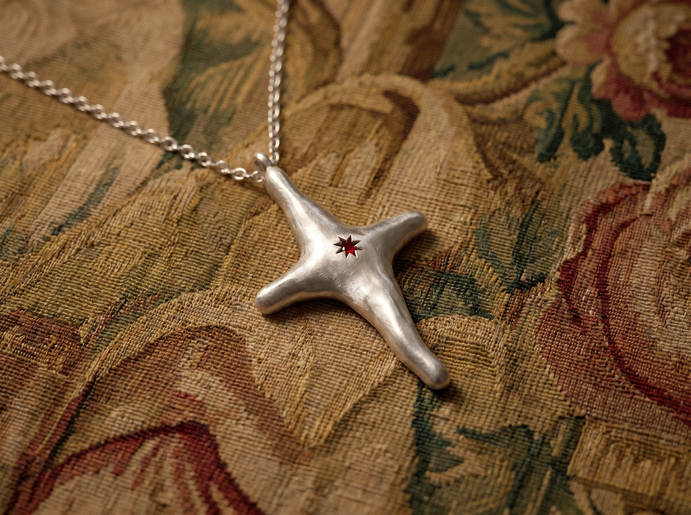
LA DESOBEDIENCIA DE UNA RECTA
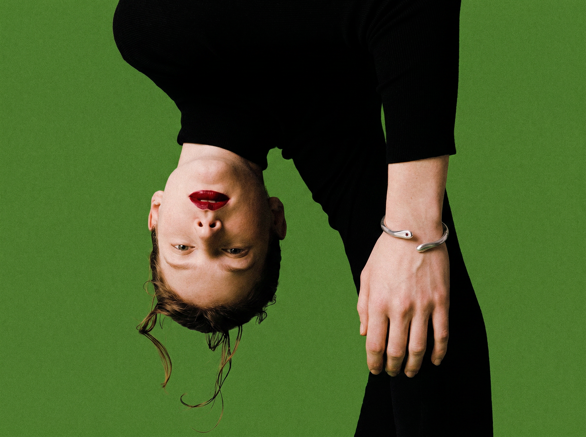
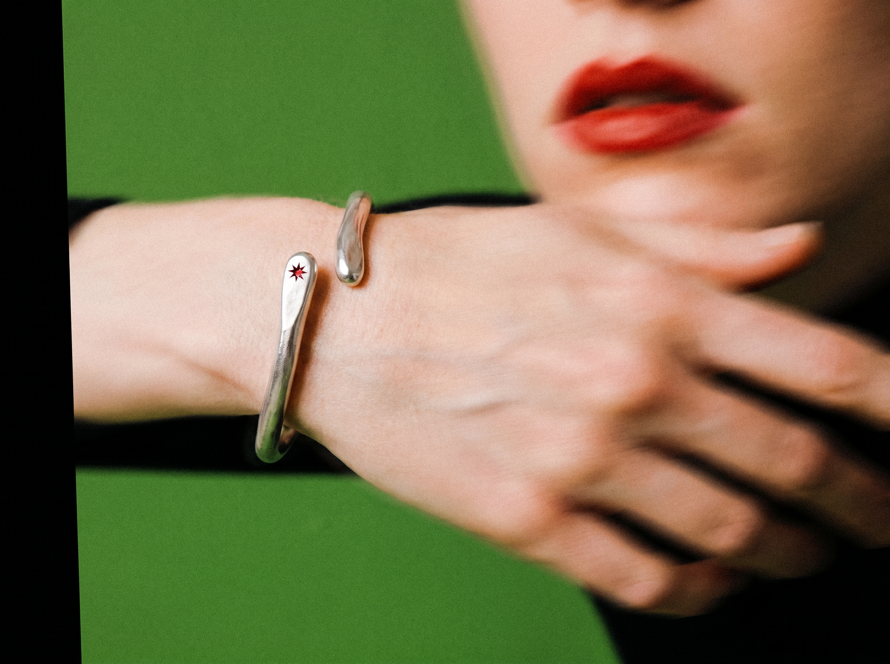
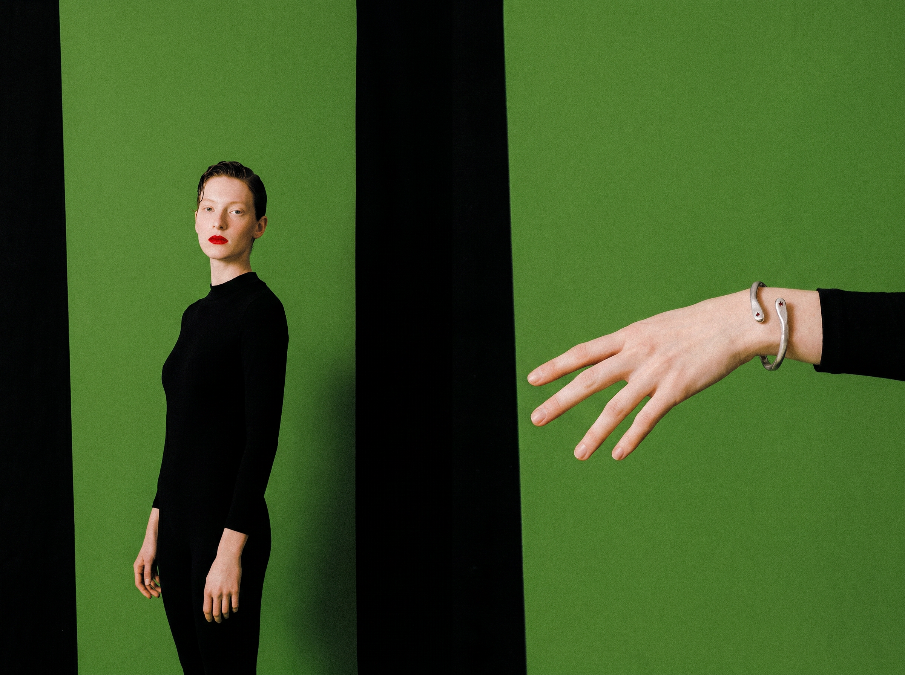
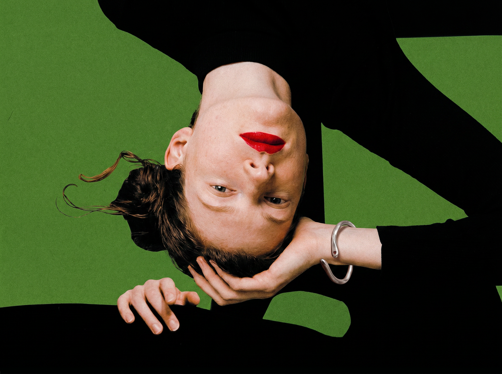
LINK WEB
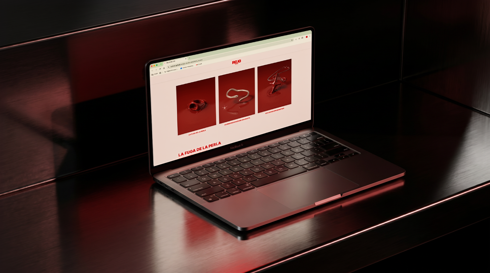
WEB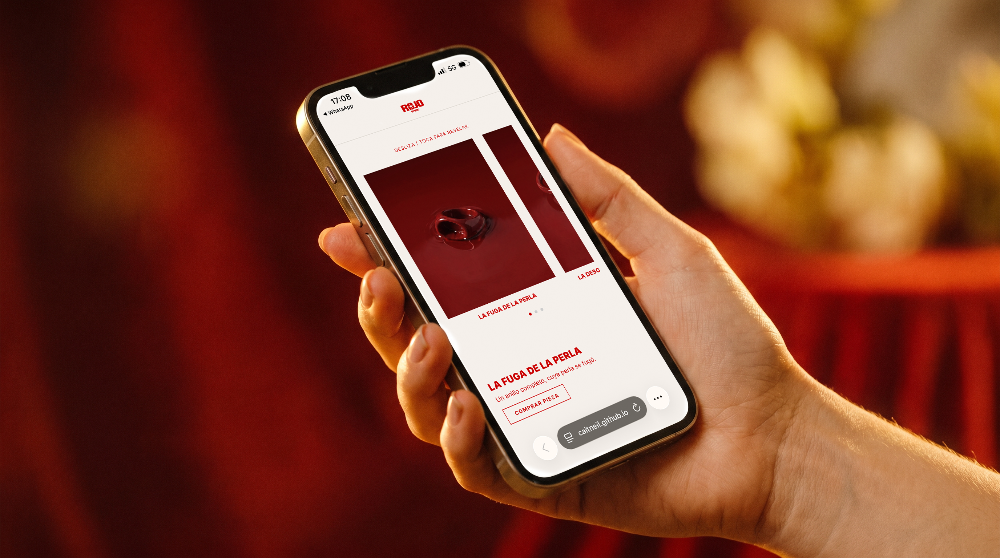
WEB